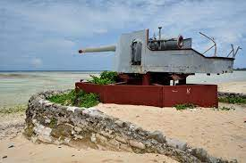

South Tarawa is the main island in Kiribati where most of government departments are located. The Picture above is picture of the House of Parliment. Tarawa is an island that consist of large population since everyone from rural islands come and stay for better life. This place is the first place to visit for tourist since the boarder is located on this island. Touring this place from end to end can give a distress.
The above picture is the picture of the war weapon that left after the battle happen on Tarawa. I chose this picture beause it remind me of the help from America during this War. This weapon was kept by everyone on the island. Also, this weapon can found in Betio. Most visitors used to visit this site since it remind them of that time (mostly Americans).